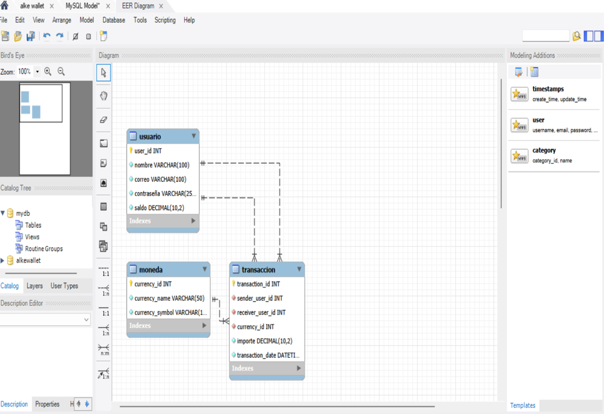
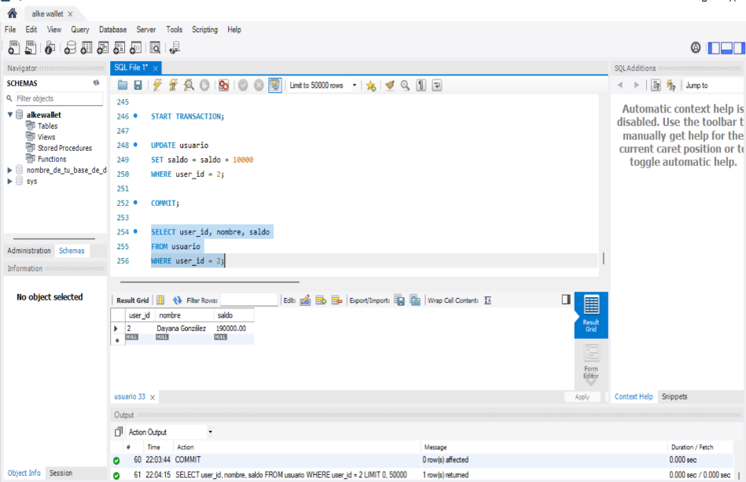
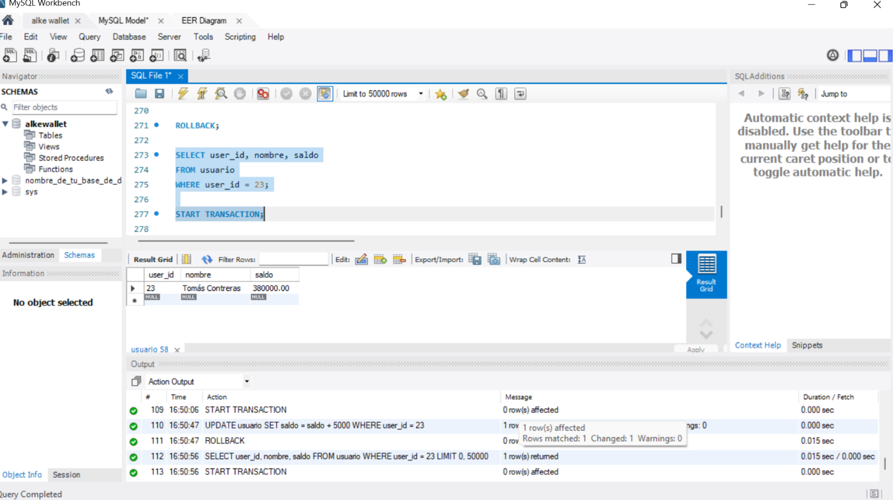
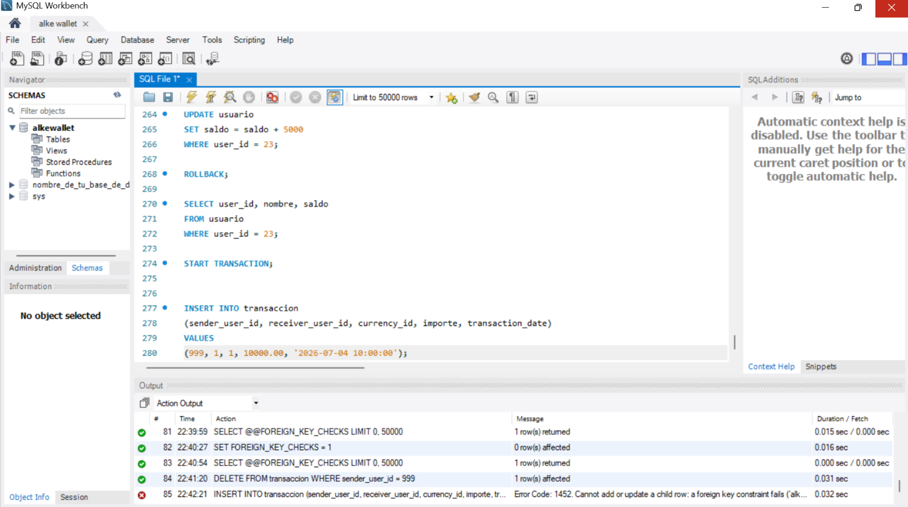
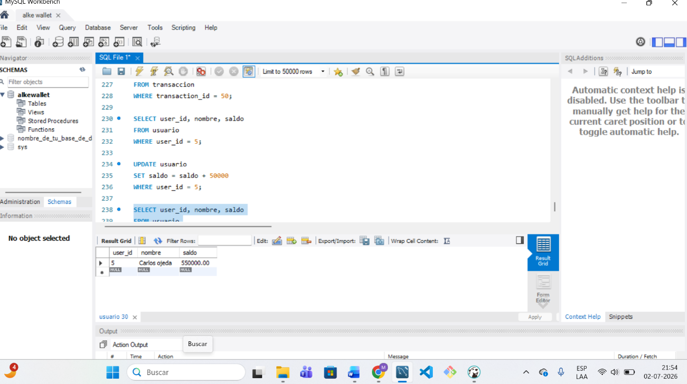

🗄️ Base de Datos de Billetera Digital
Proyecto finalizado
Este proyecto consiste en una base de datos relacional desarrollada para administrar la información principal de una billetera digital.
La base de datos permite registrar usuarios, monedas y transacciones. También permite consultar saldos, revisar movimientos y controlar las transferencias realizadas entre diferentes usuarios.
Fue desarrollada como parte de mi formación en Fundamentos de Bases de Datos, utilizando MySQL y MySQL Workbench.
Objetivo del proyecto
Diseñar e implementar una base de datos relacional que permita representar de forma organizada las operaciones principales de una billetera digital.
El proyecto busca mantener una correcta relación entre los usuarios, las monedas y las transacciones, protegiendo la consistencia de la información mediante claves primarias, claves foráneas y transacciones controladas.
Tecnologías utilizadas
- MySQL como sistema de gestión de bases de datos.
- SQL para crear, consultar, actualizar y eliminar información.
- MySQL Workbench para diseñar, ejecutar y comprobar la base de datos.
- GitHub para almacenar y presentar el proyecto.
Estructura de la base de datos
La base de datos está formada por tres tablas principales:
- usuario: almacena la información de las personas registradas y su saldo disponible.
- moneda: almacena las monedas disponibles para realizar las operaciones.
- transaccion: registra los envíos de dinero realizados entre los usuarios.
Tabla usuario
La tabla usuario almacena los datos principales de cada persona registrada en la billetera digital.
- Identificador único del usuario.
- Nombre del usuario.
- Correo electrónico.
- Contraseña.
- Saldo disponible.
Tabla moneda
La tabla moneda permite registrar las diferentes monedas que pueden utilizarse en las transacciones.
Las monedas incorporadas en el proyecto son:
- Peso chileno (CLP).
- Dólar estadounidense (USD).
- Peso argentino (ARS).
- Peso mexicano (MXN).
- Euro (EUR).
Tabla transaccion
La tabla transaccion almacena la información correspondiente a cada envío de dinero realizado dentro de la billetera digital.
- Identificador único de la transacción.
- Usuario que envía el dinero.
- Usuario que recibe el dinero.
- Moneda utilizada.
- Importe de la transacción.
- Fecha y hora de la operación.
Relaciones entre las tablas
Las tablas se relacionan mediante claves primarias y claves foráneas.
- Cada usuario posee un identificador único.
- Cada moneda posee un identificador único.
- Cada transacción identifica al usuario que envía el dinero.
- Cada transacción identifica al usuario que recibe el dinero.
- Cada transacción se relaciona con una moneda existente.
Estas relaciones permiten evitar datos incorrectos y aseguran que las transacciones solo puedan realizarse utilizando usuarios y monedas registrados.
Datos incorporados
Para comprobar el funcionamiento de la base de datos se incorporaron diferentes datos de prueba.
- 50 usuarios registrados.
- 5 monedas diferentes.
- 60 transacciones con diferentes fechas, usuarios y montos.
Funcionalidades implementadas
- Creación de la base de datos.
- Creación de las tablas usuario, moneda y transaccion.
- Definición de claves primarias.
- Definición de claves foráneas.
- Registro de usuarios.
- Registro de monedas.
- Registro de transacciones.
- Consulta de usuarios y saldos.
- Consulta del historial de transacciones.
- Actualización de datos mediante UPDATE.
- Eliminación de registros mediante DELETE.
- Inserción de datos mediante INSERT.
- Uso de filtros mediante WHERE.
- Actualización del saldo después de una operación.
- Verificación de la integridad de los datos.
Control de transacciones
En el proyecto se utilizaron transacciones controladas para proteger las operaciones que modifican información importante, como los saldos de los usuarios.
- START TRANSACTION: permite iniciar una transacción.
- COMMIT: confirma y guarda permanentemente los cambios realizados.
- ROLLBACK: revierte los cambios cuando ocurre un error.
También se realizó una simulación de error de integridad referencial utilizando un usuario inexistente. Esto permitió comprobar que la base de datos protege la información y evita registrar transacciones incorrectas.
Propiedades ACID
Durante el desarrollo del proyecto se aplicaron las propiedades ACID, fundamentales para mantener la seguridad y consistencia de una base de datos.
- Atomicidad: una operación se completa totalmente o se revierte.
- Consistencia: la información permanece válida antes y después de cada operación.
- Aislamiento: las transacciones no interfieren incorrectamente entre sí.
- Durabilidad: los cambios confirmados con COMMIT se conservan de manera permanente.
Organización del proyecto
El proyecto fue desarrollado de manera ordenada, separando las diferentes etapas de creación y comprobación de la base de datos.
- Creación del esquema de la base de datos.
- Creación de las tablas.
- Inserción de monedas.
- Inserción de usuarios.
- Inserción de transacciones.
- Ejecución de consultas de comprobación.
- Actualización de saldos.
- Pruebas con COMMIT y ROLLBACK.
- Creación del diagrama de la base de datos.
Lo que aprendí
Con este proyecto aprendí a diseñar una base de datos relacional, crear tablas y establecer relaciones utilizando claves primarias y claves foráneas.
También aprendí a utilizar instrucciones SQL para insertar, consultar, actualizar y eliminar información.
Otro aprendizaje importante fue comprender el funcionamiento de las transacciones, utilizar COMMIT y ROLLBACK, y reconocer la importancia de la integridad referencial.
Además, aprendí a utilizar MySQL Workbench para ejecutar código, revisar los datos almacenados y generar el diagrama de la base de datos.
Relación con la aplicación web
Esta base de datos se relaciona directamente con el proyecto Billetera Digital Web que también se encuentra en mi portafolio.
Actualmente, la aplicación web almacena la información en el navegador mediante LocalStorage y SessionStorage.
Como mejora futura, la aplicación web podría conectarse a esta base de datos mediante un servidor y una API para almacenar la información de manera permanente.
Próximas mejoras
- Conectar la base de datos con la aplicación web.
- Desarrollar una API para administrar las operaciones.
- Implementar autenticación segura.
- Proteger las contraseñas de los usuarios.
- Incorporar procedimientos almacenados.
- Agregar nuevas validaciones.
- Crear reportes de transacciones y saldos.
- Implementar copias de seguridad.
Evidencias del proyecto
Estas capturas muestran el diseño de la base de datos, las relaciones entre las tablas y las principales pruebas realizadas en MySQL Workbench.





Puedes hacer clic sobre una captura para verla en tamaño completo.
← Volver a mis proyectos